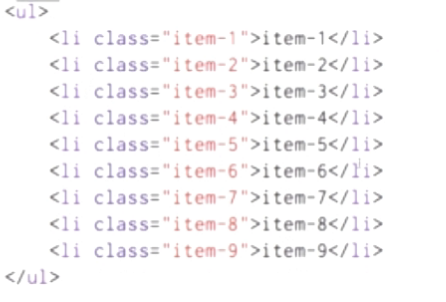

原文连接:https://www.cnblogs.com/dashucoding/p/10750368.html
$(document).ready(function(){
$("p").click(function(){
$(this).hide();
});
});
jQuery 入口函数:
$(document).ready(function(){
// 执行代码
});
或者
$(function(){
// 执行代码
});
JavaScript 入口函数:
window.onload = function () {
// 执行代码
}jQuery 入口函数与 JavaScript 入口函数的区别：
jquery的入口函数是在html所有标签都加载后才执行，而JavaScript的window.onload事件是等到所有内容加载完后才执行。
$(document).ready(function(){
$("button").click(function(){
$("p").hide();
});
});
$(document).ready(function(){
$("button").click(function(){
$("#test").hide();
});
});
$(document).ready(function(){
$("button").click(function(){
$(".test").hide();
});
});<script>
$(function(){
var DOMObject = document.getElementById('div');
var jQueryObject = $('#div');
console.log(DOMObject);
console.log(jQueryObject);
})
</script>
$("a[target='_blank']")
$("a[target!='_blank']")
$("tr:even") 选取偶数位置的 <tr> 元素
$("tr:odd") 选取奇数位置的 <tr> 元素什么是事件？
页面的响应叫做事件
dom事件：
click dbclick mouseenter mouseleave
keypress keydown keyup hover
submit change focus blur
load resize scroll unloadvar jqueryObj = $(domObj);
var domObj = jqueryObj.get([index]);
console.log(DOMObject.jquery);
console.log(jQueryObject.nodeType);
<script>
$(function(){
var div = $('<div>hello</div>');
console.log(div);
console.log($('div'));
})
</script>
<script>
$(function(){
var link1 = $('<a>', {
text: 'baidu',
href: 'http://www.baidu.com',
target: '_blank',
title: 'go'
});
link1.appendTo('body');
var link2 = $('<a>baidu</a>').attr({
text: 'baidu',
href: 'http://www.baidu.com',
target: '_blank',
title: 'go'
})
});
</script>
<script>
$(function(){
var elements = $('li');
console.log(elements.length);
console.log(elements.get());
console.log(elements[0]);
})
</script>index返回dom元素
get([index]))返回dom元素或元素的集合
eq(index)返回jquery对象
children([selector])
contents()
find(selector)
parent([selector])
parents([selector])
parentsUntil([selector])
closest(selector)<scripts>
$(function(){
var elements = $('li');
console.log(elements.eq(0));
console.log($('li:eq（0）'));
))
</script>first()和last()和toArray()
操作元素的特性，属性，和数据
获取特性的值：attr(name)
设置特性的值：attr(name,value) attr(attributes)添加类：addClass(name)
removeClass(names)
hasClass(name)
toggleClass(names][,switch])
jquery是一款JavaScript库，jQuery可以处理HTML，事件，动画等。jQuery是可以兼容多个浏览器，下载jQuery。
http://jquery.com/write less, do morehtml表现结构，js表示行为，css表示为表现。
window.jQuery === window.$$.each()
$.noop
$.toArray()text('hello')
removeClass('blue')
addClass('blue')
css('color','red')$('$div').text('hello').removeClass('blue').addClass('bold').css('color','red');$(document).ready(function(){...})document.getElementById();
document.getElementsByName();
document.getElementsByTagName();
document.getElementsByClassName();选择JavaScript中的元素：
document.querySelector();
document.querySelectorAll();css选择器：基本选择器，属性选择器，伪类选择器，伪元素选择器。
* 通配符选择器
E 元素选择器
.class 类选择器
#id id选择器
E F 后代选择器
E + F 相邻兄弟选择器
E ~ F 通用兄弟元素选择器
E[attr] 只使用属性名
:link 选择所有未被访问的连接
:visited 选择所有已被访问的链接
:hover 鼠标指针到其上的链接
:active 选择活动链接
:focus 选择获得焦点的input元素
:enabled 选择每个启用的input元素
:disabled 选择每个禁用的input元素
:checked 选择每个选中的input元素
:first-child 选择某个元素的第一个元素
:last-child 选择某个元素的最后一个子元素
:nth-child() 从1开始的元素，选择某个元素
:nth-last-child() 选择某个元素的一个或多个特定的元素
:nth-of-type() 类似 :nth-child，只有符合type类型
:nth-last-of-type() 和 nth-last-child() 类似，从最后一个子元素开始算
:first-of-type 选择一个上级元素的第一个同类子元素
:last-of-type 选择一个上级元素的最后一个同类子元素
:empty 选择的元素里面没有任何内容，这里没有内容指的是一点内容都没有
:not() 否定选择器
:first-line 用于选取指定选择器的首行
:first-letter 用于选取首字母
::before 在被选元素的内容前面插入内容
::after 在被选元素的内容后面插入内容
::selection 应用于文档中被用户高亮的部分jQuery中的基本选择器：id选择器，类选择器，元素选择器，后代选择器，属性选择器。
位置筛选器，子元素筛选器，表单筛选器，内容筛选器，自定义筛选器，其他筛选器。
位置筛选器：
:first
:last
:even
:odd
:eq(n)
:gt(n)
:lt(n)子元素的筛选器：
:first-child
:last-child
:first-of-type
:last-of-type
:nth-child()
:nth-last-child()
:nth-of-type()
:nth-last-of-type()
:only-child
:only-of-type表单筛选器：
:checked
:disabled
:enabled
:focus
:button
:checkbox
:file
:image
:input
:password
:radio
:reset
:selected
:submit
:text内容筛选器
:empty
:contains(text)
:has(selector)
:parent筛选器
:lang()
:not()
:root
:target
:hidden
:header
:animateddom对象和jQuery对象：
obj.nodeType
obj.jquery
var jqueryObj = $(domObj);
var domObj = jqueryObj.get([index]);children([selector])
contents()
find(selector)
parent([selector])
parentsUntil([selector])
closest(selector)
next([selector])
nextAll([selector])
nextUntil([selector])
prev([selector])
prevAll([selector])
prevUntil([selector])
siblings([selector])
add(selector)
not(selector)
filter(selector)
has(selector)
slice(start[,end])
map(callback)
each(iterator)
is(selector)
end()
addBack()
html()
html(content)
text()
text(content)append
prepend
before
after
appendTo
prependTo
insertBefore
insertAfter
wrap()
wrapAll()
wrapInner()
unwrap()
remove()
datach()
empty()
clone()
replaceWith()
replaceAll()
val()jQuery常用的函数：
.get() 获取指定的dom元素
.index() 返回指定元素相对于其他指定元素的index位置
.size() 返回被jQuery选择器匹配的元素的数量
.toArray() 以数组的形式返回jQuery选择器匹配的元素.add() 将元素添加到匹配元素的集合中
.addSelf() 把堆栈中之前的元素添加到当前集合中
.children() 获取匹配元素集合中每个元素的所有子元素
.closest() 从元素本身开始，逐级向上元素匹配，并返回最先匹配的祖先元素
.contents() 获得匹配元素集合中每个元素的子元素
.each() 对jQuery对象进行迭代，为每个匹配元素执行函数
.end() 结束当前链中最近的一次筛选操作，并将匹配元素集合返回到前一次的状态
.eq() 将匹配元素集合缩减为位于索引的新元素
.filter() 将匹配元素集合缩减为匹配选择器或匹配函数返回值的新元素
.find() 获取当前匹配元素集合中的每个元素的后代，由选择器进行筛选
.first() 将匹配元素集合缩减为集合中的 第一个元素
.has() 将匹配元素集合缩减为包含特定元素的后代的集合
.is() 是否存在一个匹配元素
.last() 将匹配元素集合缩减为集合中的最后一个元素
.map() 把当前匹配集合中的每个元素传递给函数
.next() 获取下一个元素
.nextAll() 获得匹配元素集合中每个元素之后的所有同辈元素
.nextUntil() 获得每个元素之后所有的同辈元素直到遇到匹配选择器的元素为止
.not() 从匹配元素集合中删除元素
.offsetParent() 获得用于定位的第一个父元素
.parent() 获得当前匹配元素集合中每个元素的父元素
.parents() 获得当前匹配元素集合中每个元素的祖先元素
.parentsUntil() 获得当前匹配元素集合中每个元素的祖先元素，直到遇到匹配选择器的元素为止
.prev() 获得匹配元素集合中每个元素的前一个同辈元素
.prevAll() 获得匹配元素集合中每个元素之前的所有同辈元素
.prevUntil() 获得每个元素之前所有的同辈元素，直到遇到匹配选择器的元素为止
.siblings() 获得匹配元素集合中所有元素的同辈元素
.slice() 将匹配元素集合缩减为指定范围的子集
addClass() 向匹配的元素添加指定的类名
after() 在匹配的元素之后插入内容
append() 向匹配元素集合中的每个元素结尾插入由参数指定的内容
appendTo() 向目标结尾插入匹配元素集合中的每个元素
attr() 设置或返回匹配元素的属性和值
before() 在每个匹配的元素之前插入内容
clone() 创建匹配元素集合的副本
detach() 从dom中移除匹配元素的集合
empty() 删除匹配的元素集合中所有子节点
hasClass() 检查匹配的元素是否拥有指定的类
html() 数组或返回匹配的元素集合中的html内容
insertAfter() 把匹配的元素插入到另一个指定的元素集合的后面
insertBefore() 把匹配的元素插入到另一个指定的元素集合的签名
prepend() 向匹配元素集合中的每个元素开头插入由参数指定的内容
prependTo() 向目标开头插入匹配元素集合中的每个元素
remove() 移除所有匹配的元素
removeAttr() 从所有匹配的元素中移除指定的属性
removeClass() 从所有匹配的元素中删除全部或者指定的类
replaceAll() 用匹配的元素替换所有匹配到的元素
replaceWith() 用新内容替换匹配的元素
text() 数组或返回匹配元素的内容
toggleClass() 从匹配的元素中添加或删除一个类
unwrap() 移除并替换指定元素的父元素
val() 设置或返回匹配元素的值
wrap() 把匹配额元素用指定的内容或元素包裹起来
wrapAll() 把所有匹配的元素用指定的内容或元素包裹起来
wrapinner() 将每一个匹配的元素的子内容用指定的内容或元素包裹起来jQuery hide() 和 show()隐藏和显示 HTML 元素
$("#hide").click(function(){
$("p").hide();
});
$("#show").click(function(){
$("p").show();
});$("button").click(function(){
$("p").hide(1000);
});
$(document).ready(function(){
$(".hidebtn").click(function(){
$("div").hide(1000,"linear",function(){
alert("Hide() 方法已完成!");
});
});
});toggle() 方法来切换 hide() 和 show() 方法
$("button").click(function(){
$("p").toggle();
});$("button").click(function(){
$("#div1").fadeIn();
$("#div2").fadeIn("slow");
$("#div3").fadeIn(3000);
});
$("button").click(function(){
$("#div1").fadeOut();
$("#div2").fadeOut("slow");
$("#div3").fadeOut(3000);
});
$("button").click(function(){
$("#div1").fadeToggle();
$("#div2").fadeToggle("slow");
$("#div3").fadeToggle(3000);
});
$("button").click(function(){
$("#div1").fadeTo("slow",0.15);
$("#div2").fadeTo("slow",0.4);
$("#div3").fadeTo("slow",0.7);
});$("#flip").click(function(){
$("#panel").slideDown();
});
$("#flip").click(function(){
$("#panel").slideUp();
});
$("#flip").click(function(){
$("#panel").slideToggle();
});jQuery 动画
$(selector).animate({params},speed,callback);
$("button").click(function(){
$("div").animate({left:'250px'});
});
$("button").click(function(){
$("div").animate({
left:'250px',
opacity:'0.5',
height:'150px',
width:'150px'
});
});
$("button").click(function(){
$("div").animate({
left:'250px',
height:'+=150px',
width:'+=150px'
});
});
$("button").click(function(){
$("div").animate({
height:'toggle'
});
});
$("button").click(function(){
var div=$("div");
div.animate({left:'100px'},"slow");
div.animate({fontSize:'3em'},"slow");
});
$("button").click(function(){
var div=$("div");
div.animate({height:'300px',opacity:'0.4'},"slow");
div.animate({width:'300px',opacity:'0.8'},"slow");
div.animate({height:'100px',opacity:'0.4'},"slow");
div.animate({width:'100px',opacity:'0.8'},"slow");
});jQuery stop() 方法 停止动画
$(selector).stop(stopAll,goToEnd);
$("#stop").click(function(){
$("#panel").stop();
});
$("#panel").stop(true);
停止所有动画效果而不是只停止当前动画使用 callback 实例
$("button").click(function(){
$("p").hide("slow",function(){
alert("段落现在被隐藏了");
});
});
没有 callback
$("button").click(function(){
$("p").hide(1000);
alert("段落现在被隐藏了");
});jQuery 方法链接
$("#p1").css("color","red").slideUp(2000).slideDown(2000);wrap() wrapAll() 与 wrapInner()的区别
wrap() 方法把每个被选元素放置在指定的 HTML 内容或元素中
wrapAll() 在指定的 HTML 内容或元素中放置所有被选的元素
wrapInner() 方法使用指定的 HTML 内容或元素，来包裹每个被选元素中的所有内容 (inner HTML)


text(),html(),val()
获取属性：attr()
$("button").click(function(){
alert($("#runoob").attr("href"));
});
$("button").click(function(){
$("#runoob").attr("href","http://www..com/");
});
$("button").click(function(){
$("#runoob").attr({
"href" : "http://www..com/",
"title" : "111"
});
});append() 在被选元素的结尾插入内容
prepend() 在被选元素的开头插入内容
after() 在被选元素之后插入内容
before() 在被选元素之前插入内容
remove() 删除被选元素（及其子元素）
empty() 从被选元素中删除子元素
addClass() 向被选元素添加一个或多个类
removeClass() 从被选元素删除一个或多个类
toggleClass() 对被选元素进行添加/删除类的切换操作
css() 设置或返回样式属性
$("p").css("background-color");
$("p").css("background-color","yellow");遍历祖先
$(document).ready(function(){
$("span").parent();
});
$(document).ready(function(){
$("span").parents();
});$(document).ready(function(){
$("span").parentsUntil("div");
});
遍历后代：
children()
find()
$(document).ready(function(){
$("div").children();
});$(document).ready(function(){
$("div").find("span");
});$(document).ready(function(){
$("div").find("*");
});遍历同胞：
siblings()
next()
nextAll()
nextUntil()
prev()
prevAll()
prevUntil()siblings() 方法返回被选元素的所有同胞元素
next() 方法返回被选元素的下一个同胞元素
nextAll() 方法返回被选元素的所有跟随的同胞元素
nextUntil() 方法返回介于两个给定参数之间的所有跟随的同胞元素
first() 方法返回被选元素的首个元素
last() 方法返回被选元素的最后一个元素
eq() 方法返回被选元素中带有指定索引号的元素
索引号从 0 开始
filter() 方法 not() 方法
$(document).ready(function(){
$("p").filter(".url");
});
$(document).ready(function(){
$("p").not(".url");
});ajax简介
AJAX 是与服务器交换数据的技术，属性了不重载情况下，实现对部分网页的更新。
jQuery load() 方法是简单但强大的 AJAX 方法
$(selector).load(URL,data,callback);
<script>
$(document).ready(function(){
$("button").click(function(){
$("#div1").load("/ajax/demo_test.txt");
});
});
</script>
callback 参数
responseTxt - 包含调用成功时的结果内容
statusTXT - 包含调用的状态
xhr - 包含 XMLHttpRequest 对象
$("button").click(function(){
$("#div1").load("demo_test.txt",function(responseTxt,statusTxt,xhr){
if(statusTxt=="success")
alert("外部内容加载成功!");
if(statusTxt=="error")
alert("Error: "+xhr.status+": "+xhr.statusText);
});
});$.get() 方法 $.post() 方法
$.get(URL,callback);
$.post(URL,data,callback);
$("button").click(function(){
$.get("demo_test.php",function(data,status){
alert("数据: " + data + "\n状态: " + status);
});
});
$("button").click(function(){
$.post("/ajax/demo_test_post.php",
{
name:"111",
url:"http://www..com"
},
function(data,status){
alert("数据: \n" + data + "\n状态: " + status);
});
});实例：
// html
<html>
<head>
<meta charset="utf-8">
<title>课程代码</title>
<script type="text/javascript" src="../js/jquery/jquery-3.0.0.min.js"></script>
<script type="text/javascript" src="../js/index.js"></script>
<link rel="stylesheet" type="text/css" href="../css/style.css">
</head>
<body>
<div class="header">
<div class="banner">
<img src="../images/###.png">
<span><a href="http://coding.###.com/">实战</a></span>
<span><a href="http://www.###.com/course/program">路径</a></span>
<span><a href="http://www.###.com/wenda">猿问</a></span>
<span><a href="http://www.###.com/article">手记</a></span>
</div>
<a id="loginLink" href="#">登录</a>
<a id="regeLink" href="#">注册</a>
</div>
<div class="swipe">
<div class="nav">
<div class="item">
<p class="title">前端开发</p>
<p>
<span>Html / Css</span>
<span>Javascript</span>
<span>Html5</span>
</p>
</div>
<div class="item">
<p class="title">后端开发</p>
<p>
<span>PHP / Nodejs</span>
<span>Java</span>
<span>C#</span>
</p>
</div>
<div class="item">
<p class="title">移动开发</p>
<p>
<span>Android</span>
<span>iOs</span>
<span>Cocos2d-x</span>
</p>
</div>
<div class="item">
<p class="title">数据处理</p>
<p>
<span>Mysql</span>
<span>Oracle</span>
<span>MongoDB</span>
</p>
</div>
</div>
<div class="ppt first"></div>
</div>
<div class="lessions">
<p class="title">❤ 热门课程</p>
<ul>
<li>
<img src="../images/004.jpg">
<p>JavaScript快速入门</p>
</li>
<li>
<img src="../images/005.jpg">
<p>玩转Photoshop</p>
</li>
<li>
<img src="../images/006.jpg">
<p>代码编写规范</p>
</li>
<li style="margin-right:0;">
<img src="../images/004.jpg">
<p>JavaScript快速入门</p>
</li>
<li>
<img src="../images/005.jpg">
<p>玩转Photoshop</p>
</li>
<li>
<img src="../images/006.jpg">
<p>代码编写规范</p>
</li>
<li>
<img src="../images/004.jpg">
<p>JavaScript快速入门</p>
</li>
<li style="margin-right:0;">
<img src="../images/005.jpg">
<p>玩转Photoshop</p>
</li>
</ul>
</div>
<div class="lessions">
<p class="title">☆ 最新发布</p>
<ul>
<li>
<img src="../images/004.jpg">
<p>JavaScript快速入门</p>
</li>
<li>
<img src="../images/005.jpg">
<p>玩转Photoshop</p>
</li>
<li>
<img src="../images/006.jpg">
<p>代码编写规范</p>
</li>
<li style="margin-right:0;">
<img src="../images/004.jpg">
<p>JavaScript快速入门</p>
</li>
<li>
<img src="../images/005.jpg">
<p>玩转Photoshop</p>
</li>
<li>
<img src="../images/006.jpg">
<p>代码编写规范</p>
</li>
<li>
<img src="../images/004.jpg">
<p>JavaScript快速入门</p>
</li>
<li style="margin-right:0;">
<img src="../images/005.jpg">
<p>玩转Photoshop</p>
</li>
</ul>
</div>
<div class="footer">
<div class="site">
<span>关于我们</span>
<span>人才招聘</span>
<span>讲师招募</span>
<span>联系我们</span>
<span>意见反馈</span>
<span>友情链接</span>
</div>
<div class="author">
© 2016 ###.com 京ICP备13046642号
</div>
</div>
<!-- 弹出层遮罩 -->
<div id="layer-mask" class="layer-mask"></div>
<!-- 弹出层窗体 -->
<div id="layer-pop" class="layer-pop">
<!-- 弹出层关闭按钮 -->
<div id="layer-close" class="layer-close">×</div>
<!-- 弹出层内容区域 -->
<div id="layer-content" class="layer-content">
</div>
</div>
<!-- 登录窗体 -->
<div id="loginHtml" style="display:none;">
<!-- 登录窗体 -->
<div class="login">
<h4 class="title">登 录</h4>
<div class="item">
<label>账号</label>
<input id="username" class="input" name="username" type="text"/>
<p class="error-msg"></p>
</div>
<div class="item">
<label>密码</label>
<input id="password" class="input" name="password" type="password"/>
</div>
<div class="item">
<label> </label>
<input id="loginSubmitBtn" type="submit" class="submit" value="填写好了"/>
</div>
</div>
</div>
<!-- 注册窗体 -->
<div id="regeHtml" style="display:none;">
<!-- 注册窗体 -->
<div class="login">
<h4 class="title">注 册</h4>
<div class="item">
<label>账号</label>
<input id="username" class="input" name="username" type="text"/>
<p class="error-msg"></p>
</div>
<div class="item">
<label>密码</label>
<input id="password" class="input" name="password" type="password"/>
</div>
<div class="item">
<label>重复密码</label>
<input id="repassword" class="input" name="repassword" type="password"/>
</div>
<div class="item">
<label> </label>
<input id="regeSubmitBtn" type="submit" class="submit" value="填写好了"/>
</div>
</div>
</div>
</body>
</html>// css
@charset "utf8";
*{margin:0;padding:0;}
body
{
text-align:center;
font: 14px/1.5 "微软雅黑",Verdana,Tahoma,Arial,sans-serif,"宋体";
line-height:30px;
}
ul,li
{
list-style:none;
}
/*弹出层遮罩*/
.layer-mask
{
display: none;
z-index: 99999;
position: fixed;
top : 0;
left: 0;
width: 100%;
height: 100%;
background: #000;
opacity: 0.5;
}
/*弹出层窗体*/
.layer-pop
{
display: none;
z-index : 100000;
position: fixed;
top : 0;
left : 0;
right : 0;
bottom: 0;
margin: auto;
width: 400px;
height: 300px;
background: #fff;
}
/*弹出层关闭按钮*/
.layer-close
{
float :right;
width: 24px;
height: 24px;
border: 3px solid #fff;
text-align: center;
line-height: 24px;
border-radius: 50%;
background: #eee;
margin-right: -12px;
margin-top:-12px;
}
.layer-close:hover
{
cursor: pointer;
background: #ccc;
color: #fff;
}
/*登录*/
.login
{
}
.login h4
{
font-size:20px;
line-height:50px;
}
.login label
{
margin-right: 5px;
color: #888;
display: inline-block;
width: 60px;
text-align: right;
}
.login .input
{
border:1px solid #ccc;
border-radius:3px;
padding:10px 5px;
width:250px;
}
.login .item
{
margin:20px auto;
}
.login .submit
{
background: #e40;
border:1px solid #e40;
border-radius:5px;
padding:10px 5px;
width:250px;
color:#fff;
}
.login .error-msg
{
color:#e40;
}
/*慕课网效果*/
/*顶部*/
.header
{
height:80px;
line-height:80px;
text-align : right;
margin: 0 20px;
overflow:hidden;
}
.header .banner
{
float:left;
}
.header .banner span
{
font-size:18px;
margin:0 15px;
line-height:80px;
}
.header .banner img
{
width:150px;
vertical-align: middle;
margin-right:40px;
}
.header a
{
color:#666;
text-decoration:none;
margin-left:20px;
}
/*轮播*/
.swipe
{
width: 1200px;
height: 450px;
margin : 0 auto;
overflow:hidden;
}
.swipe .ppt
{
width:100%;
height:100%;
}
.swipe .ppt.first
{
background:url(../images/001.jpg);
background-size: cover;
}
.swipe .ppt.second
{
background:url(../images/002.jpg);
background-size: cover;
}
/*导航*/
.nav
{
position:absolute;
width : 280px;
height:450px;
background: #000;
color:#fff;
filter:alpha(opacity=50); /*支持 IE 浏览器*/
-moz-opacity:0.50; /*支持 FireFox 浏览器*/
opacity:0.50; /*支持 Chrome, Opera, Safari 等浏览器*/
}
.nav .item
{
margin: 5px 20px;
padding: 10px;
text-align:left;
border-bottom:1px solid #aaa;
}
.nav .item:hover
{
background:#666;
cursor: pointer;
}
.nav .item .title
{
font-size:16px;
margin-bottom:10px;
}
.nav .item span
{
margin-right : 9px;
}
/*课程排列*/
.lessions
{
width : 1200px;
margin : 0 auto;
}
.lessions .title
{
text-align:left;
line-height : 45px;
color:#666;
font-size:16px;
margin-top:30px;
}
.lessions ul
{
overflow:hidden;
}
.lessions li
{
float : left;
width : 23%;
margin-right: 32px;
margin-top: 32px;
}
.lessions li img
{
max-width:100%;
}
/*页脚*/
.footer
{
margin-top:50px;
padding:50px 0;
background: #eee;
border-top : 1px solid #ddd;
}
.footer .site
{
line-height:100px;
}
.footer .site span
{
margin:0 20px;
color :#888;
}// js
$(document).ready(function($){
// 登录链接事件
// $("#loginLink").click(function(){
// // 显示弹出层遮罩
// $("#layer-mask").show();
// // 显示弹出层窗体
// $("#layer-pop").show();
// // 弹出层关闭按钮绑定事件
// $("#layer-close").click(function(){
// // 弹出层关闭
// $("#layer-mask").hide();
// $("#layer-pop").hide();
// });
// });
// 登录链接事件
$("#loginLink").click(function(){
// 获取登录窗体代码
var loginHtml = $("#loginHtml").html();
showLayer(loginHtml,500,300,closeCallback);
// 登录表单校验
$("#loginSubmitBtn").click(function(){
var username = $("input[name='username']").val();
var password = $("input[name='password']").val();
if(username === '123' && password === '123'){
alert("登录成功");
}else{
$(".error-msg").html("账号或密码输入错误");
}
});
});
// 注册链接事件
$("#regeLink").click(function(){
// 获取注册窗体代码
var regeHtml = $("#regeHtml").html();
showLayer(regeHtml,500,350,closeCallback);
// 注册表单校验
$("#regeSubmitBtn").click(function(){
var username = $("input[name='username']").val();
var password = $("input[name='password']").val();
var repassword = $("input[name='repassword']").val();
if(username === 'imooc' && password === 'imooc' && repassword === password){
alert("注册成功");
}else{
$(".error-msg").html("账号或密码输入错误");
}
});
});
// 弹出层关闭回调函数
function closeCallback(){
$(".error-msg").html("");
}
// 显示弹出层
function showLayer(html,width,height,closeCallback){
// 显示弹出层遮罩
$("#layer-mask").show();
// 显示弹出层窗体
$("#layer-pop").show();
// 设置弹出层窗体样式
$("#layer-pop").css({
width : width,
height : height
});
// 填充弹出层窗体内容
$("#layer-content").html(html);
// 弹出层关闭按钮绑定事件
$("#layer-close").click(function(){
// 弹出层关闭
hideLayer();
// 关闭的回调函数
closeCallback();
});
}
// 隐藏弹出层
function hideLayer(){
// 弹出层关闭
$("#layer-mask").hide();
$("#layer-pop").hide();
}
});结言
好了，欢迎在留言区留言，与大家分享你的经验和心得。
感谢你学习今天的内容，如果你觉得这篇文章对你有帮助的话，也欢迎把它分享给更多的朋友，感谢。